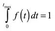

| |
|
|
|
1) Χρησιμοποιήστε το πρόγραμμα ExampleLikelihoodFit.C και το λογισμικό ROOT για να υπολογίσετε την παράμετρο k που περιγράφεται στο παράδειγμα της σελίδας 11 της διάλεξης 9.
2)
Θεωρήστε το πρόβλημα προσδιορισμού του χρόνου ζωής ενός σωματιδίου το
οποίο μπορεί να σταματήσει σε κάποιον ανιχνευτή, μετρώντας τις
διασπάσεις του υπό την παρουσία σταθερού υποβάθρου. Ο ρυθμός διάσπασης
δίνεται από τη σχέση R(t) = A + B exp(-Γτ). Θεωρούμε ότι οι πραγματικές
τιμές των παραμέτρων Α, Β και Γ είναι αντίστοιχα Α=1/sec, B=2/sec
και Γ=3/sec. Κάθε φορά που σταματούμε ένα σωματίδιο στον αντιχνευτή μας
θα περιμένουμε ως ένα μέγιστο χρόνο tmax=3sec. Μπορούμε
να φανταστούμε ότι κάνουμε το πείραμα πολλές φορές ώστε να μαζέψουμε
αρκετά δεδομένα, άλλωστε κάθε πείραμα διαρκεί 3 sec.
(Α) Δημιουργήστε αρχικά μερικά ψευδο-δεδομένα. Θα το κάνετε αυτό
χρησιμοποιώντας τεχνικές Monte Carlo όπως η μέθοδος τηε απόρριψης.
Υποθέστε ότι θέλετε να δημιουργήσετε γεγονότα τα οποία έχουν κατανομή
που ακολουθεί την συνάρτηση πυκνότητας πιθανότητας f (x). Προφανώς αυτό θα επιτευχθεί δημιουργώντας τυχαία ζεύγη (xi,yi ) και κρατώντας μόνο αυτά για τα οποία ισχύσει yi<=f (xi ).
Θα δημιουργήσετε ψευδο-δεδομένα ως εξής: Ο μέγιστοςε ρυθμός είναι για t=0 όπου Rmax=A + B. Επιλέξτε ένα x, τον χρόνο t της διάσπασης (τυχαίο μεταξύ 0 και tmax ) και επιλέξτε επίσης ένα τυχαίο ρυθμό R μεταξύ 0 και Rmax. Χρησιμοποιήστε την pdf για
να αποφασίσετε αν θα κρατήσετε ή απορρίψετε το γεγονός. Δημιουργήστε
ένα ικανοποιητικό αριθμό γεγονότων. Πόσο ποσοστό γεγονότων κρατάτε κατά
την δημιουργία του ψευδο-δείγματος;
(Β) Υπολογίστε την -logL για τα δεδομένα σας και η pdf θα πρέπει να είναι κανονικοποιημένη κατάλληλα ώστε 
Με βάση την κανονικοποίηση μπορείτε να ορίσετε την likelihood συναρτήσει δύο μεταβλητών Γ και k=A/B.
Θα
μελετήσετε τα προσομοιωμένα γεγονότα υποθέτοντας ότι δεν ξέρετε τις
τιμές των Α, Β και Γ που χρησιμοποιήσατε για να τα δημιουργήσετε.
Θέλουμε να υπολογίσουμε την τιμή του Γ από τα δεδομένα. Γράχτε τον
κώδικα για να υπολογίσετε την αρνητική log likelihood:  όπου ti είναι οι τιμές χρόνου που επιλέξατε κατά την δημιουργία του ψευδο-δείγματος. όπου ti είναι οι τιμές χρόνου που επιλέξατε κατά την δημιουργία του ψευδο-δείγματος.
(Γ) Θα υπολογίσετε το ελάχιστο της συνάρτησης -logL μελετώντας την
συμπεριφορά της συνάρτησης. Κάντε το γράφημα της συνάρτησης -lnL όπως
την υπολογίσατε στο προηγούμενο ερώτημα και καθώς μεταβάλλεται τις
τιμές των k και Γ στην περιοχή της σωστής απάντησης (k
= 0.5 και Γ = 2). Πόσο κοντά είναι η τιμή του Γ που δίνει το ελάχιστο
της log likelihood στην πραγματική τιμή του Γ; Κάντε το ίδιο αλλά αυτή
τη φορά χρησιμοποιώντας 10 φορές περισσότερα δεδομένα. Πόσο κοντά είναι
στην πραγματική τιμή τους οι παράμετροι;
(Δ) Για μεγάλο αριθμό δεδομένων είδαμε ότι -2lnL κατανέμεται όπως η κατανομή χ2
και η αβεβαιότητα στην εκτίμηση μίας παραμέτρου της συνάρτησης μπορεί
να βρεθεί από το να υπολογίσουμε πόσο θα πρέπει να αλλάξουμε την
τιμή της παραμέτρου ώστε να αλλάξει το -2lnL κατά μία μονάδα.
Υποθέτοντας ότι ξέρετε το k
ακριβώς να κάνετε το γράφημα της -2lnL συναρτήσει της Γ για
τιμές του Γ γύρω στο μέγιστο τηε likelihood και δείξτε την
αβεβαιότητα στη μετρούμενη τιμή της Γ.
Προσπαθήστε να τρέξετε τον κώδικά σας για διαφορετικό αριθμό γεγονότων
για κάθε ψευδο-πείραμα και δοκιμάστε να τρέξετε για μεγάλο αριθμό
ψευδο-πειραμάτων. Μπορείτε να εξακριβώσετε αν στο 68% των
περιπτώσεων η πραγματική τιμή βρίσκεται στην περιοχή που ΔL=1;
Συγκρίνετε το πρόγραμμά σας με το Lab10_prob.C το οποίο μπορείτε να τρέξετε μέσα στο λογισμικό ROOT.
|
| |
|
|